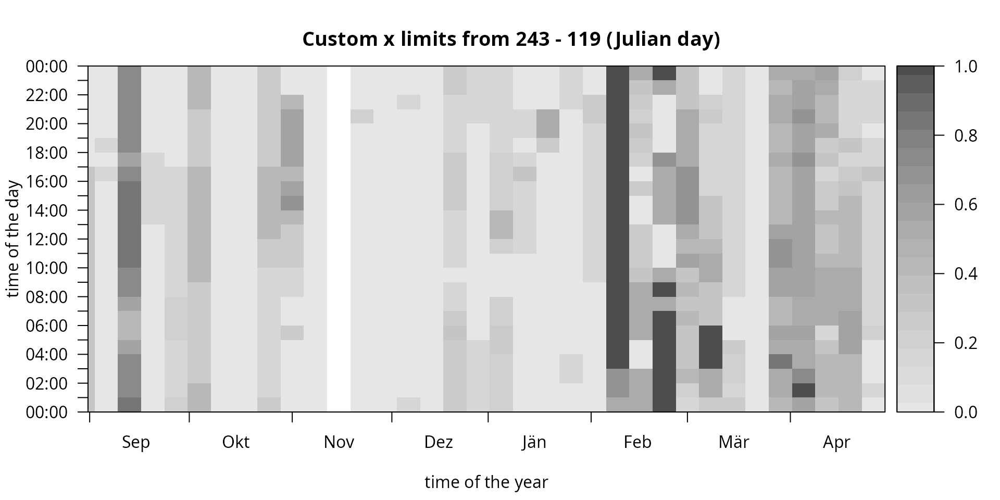

vignettes/image.Rmd
image.RmdDefault Hovmöller Diagram
The generic function image plots a Hovmöller diagram of the estimated probabilities.
# Loading the demo data set
data <- demodata()
# Estimate the classification model
mod <- foehnix(diff_t ~ ff + rh, data = data,
filter = list(dd = c(43, 223), crest_dd = c(90, 270)),
switch = TRUE, verbose = FALSE)
# Create plot
image(mod)
By default, the Hovmöller diagram shows the frequency occurrence (estimated probability \(\pi \ge 0.5\)) aggregated over 7 days (abscissa) on the same temporal resolution (ordinate) as the original data set. The image function allows for a high degree of customization. This page contains some of the main features - details are provided on the corresponding manual page.
Colors, Contours, and Limits
The plot can be customized by providing a vector of custom HEX colors (col), specify custom limits on the abscissa (xlim \(\in [0, 365]\)), the ordinate (ylim \(\in [0, 86400]\)), and for the range (zlim). In addition, contours = TRUE allows to add contour lines. In addition, the two input arguments deltat and deltad can be used to change the aggregation intervals.
image(mod,
deltat = 3 * 3600, # aggregation (time of the day): 3 hourly intervals
deltad = 14, # aggregation (day of the year): two-week intervals
col = colorspace::sequential_hcl(21, "BuPu", rev = TRUE), # custom colors
contours = TRUE, # enable contour lines
contour.col = "gray20", # custom contour colors
main = "Custom Colors and Contours")
The limits can be used to adjust the area to be plotted.
image(mod,
col = colorspace::sequential_hcl(21, "BuPu", rev = TRUE),
contours = TRUE,
contour.col = "white",
xlim = c(91, 151),
ylim = c(9, 18) * 3600,
zlim = c(0, 0.5),
main = "Custom Plot and Color Limits",
xlab = "April and May",
ylab = "09:00 UTC - 18:00 UTC")This is especially useful if one has a data set which only covers a short time period (e.g., only several months). Please note that, for demonstration purposes, we will use a subset of the demodata data set which comes with an hourly resolution. Thus, the number of observations to train the foehnix models is rather short and may not lead to robust estimates. In a real-world application you may use a higher temporal resolution (e.g., 10min observations).
# Subsetting the demo data set
# - data_subset: take data from September 2015 trough April 2016
data_subset <- window(data, start = as.POSIXct("2015-09-01 01:00"), end = as.POSIXlt("2016-04-29 23:00"))
# Estimate foehnix classification models
mod_subset <- foehnix(diff_t ~ ff + rh, data = data_subset,
filter = list(dd = c(43, 223), crest_dd = c(90, 270)),
switch = TRUE, verbose = FALSE)
# Plotting "mod1" with custom x-limits
xlim <- as.POSIXlt(range(index(data_subset)))$yday
image(mod_subset, xlim = xlim, zlim = c(0, 1),
main = sprintf("Custom x limits from %d - %d (Julian day)", xlim[1L], xlim[2L]))
Note that our data subset contains observations from September 2015 trough April 2016 (one winter; over new years eve). If decreasing x-limits are provided the image function adjusts itself to show one continuous period over new years eve (here: autumn over winter to spring).
Custom Aggregation
The argument FUN can either be a custom R function or one of the following:
-
"freq": frequency of occurrence (\(\frac{\#\{\pi \gt 0.5\}}{N}\)) plotting frequencies. -
"mean": plots the mean probability (\(\frac{1}{N} \sum_{i}^{N} \pi_i\)). -
"occ": occurrence of foehn (absolute number; \(\#\{pi_i \gt 0.5\}\)). -
"noocc": the inverse to"occ"(absolute number; \(\#\{pi_i < 0.5\}\)).
Some examples: